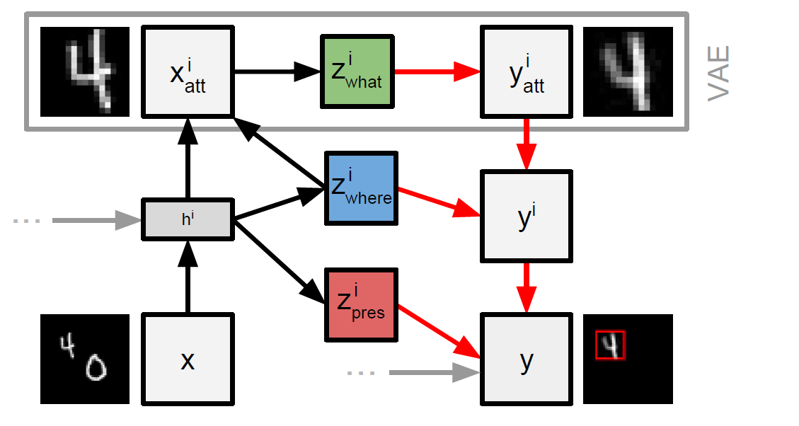

AIR
特点
结构化的对图像image进行编码生成隐变量，相比于VAE & DRAW等非结构化的方法来说对于downstream的泛化能力更强
infer the number of objects in the image推导得出图像中的object数量
describe every object with a latent variable对每一个object都使用一个隐向量进行特征描述，由于每幅图像的object个数不一定，所以AIR可以为每一幅图像生成一个变长的representation。
ST：spatial transfomer，只有加入了ST之后才可以赋予隐变量具体的实际意义，包括位置和形状，之后才能画出bounding box
p(n|θ)用一个几何分布，倾向于小数量的object
Idea
- 难点：无监督——如何定义一个object & 离散随机变量的求导
- 我们先sample图像中object的个数，再根据n确定sample的z（因为n不同，z的维度不同），再使用model来重构image x
$$
p_\theta(x)=\sum_i^Np_N(n)\int p_\theta^z(z|n)p_\theta^x(x|z) dz
$$
z = (z_what, z_where, z_pres)，其中z_pres是离散随机变量（几何分布 / 伯努利分布），z_where = [s, x, y]代表pose = scale & position。z_what capture image语义信息，在AIR中即为object经过VAE的隐向量
使用RNN迭代，每一次只编码一个object
用来sample z的分布的参数都由inference net输出——sample操作对于离散和连续的随机变量都是不可导（这一点很好理解，因为你无法直观理解当参数改变Δw，结果会改变多少，公式理解就是将求导从期望运算E的外面移到E的里面）
连续随机变量：重参数技巧，将sample过程单独移出来
离散随机变量：likelihood ratio estimator + neural baseline（减小梯度）
详细公式见ELBO的求导
How it work
当前时步：使用RNN输出z_pres和z_where，若z_pres为0则前馈结束；将x和z_where输入到STN中，得到object的crop，使用VAE重构，其中VAE生成的隐变量表示即为z_what，重构object输入到STN中做之前的逆过程（即放大到原来image的size），每一时步重构image相加得到最终的重构图像

因为一个batch中每张image可能有不同的object数量，所以我们不能简单的说当前出现z_pres == 0就break循环，但是我们必须阻止这个样本下的梯度传播，所以对于上述的每一个输出值都应该乘prev.z_pres来截断梯度
STN：spatial transfomer network。其实主要就是做一个仿射变换（原图像的一个放缩加上平移）
$$
\left[\begin{matrix} s & 0 & x \\ 0 & s & y \end{matrix}\right]
- \left[
\begin{matrix}
\end{matrix}a \\ b \\ 1
\right]
=
\left[
\begin{matrix}
\end{matrix}s*a+x \\ s*b+y
\right]
$$
- \left[
因为totallly unsupervised，所以我们必须加入机制来告诉model哪一个object已经看过，哪一个object没有看过，在实现的时候使用了以下trick：
- RNN的记忆功能
- 每次RNN的输入用上
prev.z_what,prev.z_where,prev.z_pres一起作为输入 - DAIR：每个时步使用
(x^i - x)，即当前重构结果和原image的差作为RNN的输入
source code
其实实现上最大的困难应该就是z_pres如何将梯度传下去，这份pytorch源码中使用的是一个baseline_loss：网络预测值为伯努利的成功概率，baseline loss = infer_net的成功概率预测值 - baseline_net的成功概率预测值，这样跳过了sample过程，将梯度传下去了。
1 | def forward(self, x): |
问题：
why sample而不是像有监督学习一样直接预测实际值？->更强的取值能力
->因为无监督嘛->都是N(0,1)
所以隐变量先验都是标准正态分布，将复杂性放到模型上
任务——scene understanding还是object detection->目标检测的话直接attention不久找到了吗？
无监督下只有通过重构才可以知道模型效果怎么样，否则无法训练
bounding box怎么画出来的？——z_where + STN吗？
图片中心偏移
为什么先验和似然都可以人为指定？因为高斯的拟合能力太强了吗？
只不过用高斯分布实验效果不错
两个estimator公式的区别在哪里？